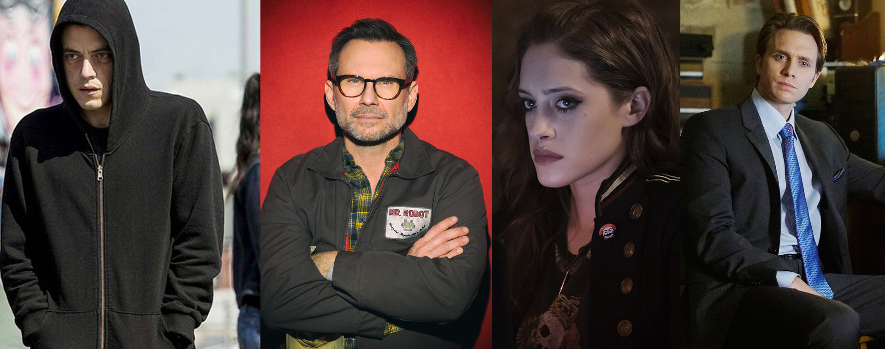

MR ROBOT : TV Series is The New Cinema
Tv Series ini sangatlah direkomendasikan bagi orang yang suka dengan film yang bertemakan Hacker atau dunia komputer. Cerita film ini juga sangat berkualitas, tetapi yang paling saya sukai adalah pengambilan gambar dan desain suara yang sangat padu membuat saya seakan akan saya yang menonton ikut ke dalam cerita. Ketegangan dan plot twist juga menjadi bumbu yang sangat mencolok pada film ini. sehingga membuat film ini tidak melulu monoton dengan komputer, juga menawarkan aksi.
Karakter Utama
1. Ell1ot Alders0n
Elliot adalah karakter utama yang merupakan tokoh yang mengalami penyakit Social Anxiety Disorder, delusi, dan paranoid. Dia adalah seorang hacker vigilante pada malam hari dan menjadi cyber securuty pada siang hari.
2. Edward Alders0n
Edward Alderson merupakan ayah dari Elliot Alderson dan menjadi pendiri dari grup hacker fsociety, yang bertujuan untuk menyerang konglomerat besar didunia. kecerdasan, dan karismanya sangat terlihat akan tetapi juga dapat melakukan kekerasan.
3. Darl3ne Ald3rson
Darlene adalah adik dari Elliot, dia juga serang hacker yang handal sama seperti kakaknya. Darlene juga merupakan member dari grup hacker fsociety, dia juga ikut dalam melakukan peretasan dengan Elliot.
4. Tyrell W3ll1ck
Seorang tokoh yang keberadaannya sangat membingungkan, dia adalah pemilik dari E-Corp (Evil Corp) yang menjadi target utama Elliot untuk di tumbangkan. karakter yang sangat misterius dan rumit menjadi karakteristik tokoh ini